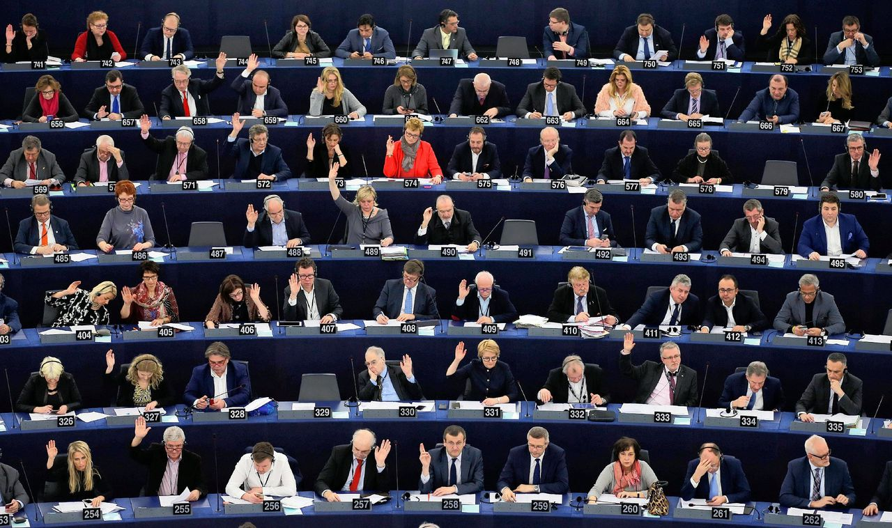

Jullie zijn gevraagd door de burgemeester van Apeldoorn om nieuwe wetten of regels voor Apeldoorn te bedenken. Een hele verantwoordelijkheid!
Wat zijn de drie belangrijkste principes of regels voor Apeldoorn in 2024?
We gaan nu samen lezen uit Exodus 20:13--17
Pleeg geen moord. Pleeg geen overspel. Steel niet. Leg over een ander geen valse getuigenis af. Zet uw zinnen niet op het huis van een ander, en evenmin op zijn vrouw, op zijn slaaf, zijn slavin, zijn rund of zijn ezel, of wat hem ook maar toebehoort.
Dit zijn de laatste vier woorden die God ons geeft om in een goede relatie met Hem te leven.
Zijn er woorden in de tekst die jullie niet begrijpen? Hebben jullie nog vragen?
Ik wil nu graag met jullie hierop reflecteren. Dat wil ik doen door over iets concreets na te denken. Hier heb ik mijn mobiel. Hoe kan ik met mijn mobiel deze woorden/geboden overtreden?
Het is interessant om te kijken hoe Jezus met de geboden omgaat. Hij zegt zelf (en dat hebben we in les 3 gezien -- Jezus is gekomen om de wet te vervullen, maar zolang de hemel en aarde bestaan zal geen jota of tittel van de wet vergaan) dat de wet niet bedoeld is om een hele zware last te zijn voor mensen. Maar hij zegt in Matteüs 5:
Exodus 21:23--25 zegt:
23 Heeft ze wel ander letsel opgelopen, dan geldt: een leven voor een leven, 24 een oog voor een oog, een tand voor een tand, een hand voor een hand, een voet voor een voet, 25 een brandwond voor een brandwond, een kneuzing voor een kneuzing, een striem voor een striem.
\noindent Wat houdt het dan in, een oog voor een oog, een tand voor een tand? Vind je dit rechtvaardig? Of oneerlijk? Of heftig? Zou het in onze tijd eigenlijk ook moeten?
In Matteüs 5:38--39 zegt Jezus ook iets over deze regel. Hij geeft alleen een andere invulling aan dat gebod.
In de oude nabije oosten sloeg men iemand uit boosheid (om iemand iets betaald te zetten of zo) met de achterkant van de hand. Jezus zegt dat je reactie dan niet moet zijn om ook terug te klappen, maar om je andere wang te keren.
Waarom? Het kan twee redenen hebben. De 'aanvaller' heeft dan twee opties:
Door de andere wang te keren, vraag je eigenlijk aan de ander: 'Wil je dit echt? Wil jij jezelf nog verder verlagen door zelfs met de rug van je hand te slaan waarmee je normaal gesproken je achterwerk afveeg, of ga je me nog harder slaan door me recht in het gezicht te slaan met je vuist?' Zo doorbreek je de cirkel van geweld.
Denk je dat het helpt? Is dit een goede tactiek voor onze tijd?
We hebben tijdens deze les gezien dat het om meer gaat dan om niet de geboden te overtreden. Dus meer dan alleen niet iemand doodmaken. Want dan gaat het meestal wel goed. Er zit echter meer diepgang in. Het gaat om liefde voor de naasten.
Hoe kunnen we de geboden positief verwoorden, dat deze gedachte uit de verf komt?
De uitdaging is om dit in praktijk te brengen. Ik kan het nu wel denken en zeggen, maar als er een 'slome duikelaar voor me fiets', dan is mijn geduld snel op. Hoor je wat ik zeg? 'slome duikelaar'... Dit is juist wat Jezus bedoelt als Hij zegt dat we onze broeder/zuster niet in ons gedachten gek of dom moeten noemen. Daarmee overtreden we al het gebod.
Mijn challenge is als volgt: Probeer op te letten wanneer je geduld ineens weg is. Waarom gebeurt het? En kun je dan toch het goede doen?